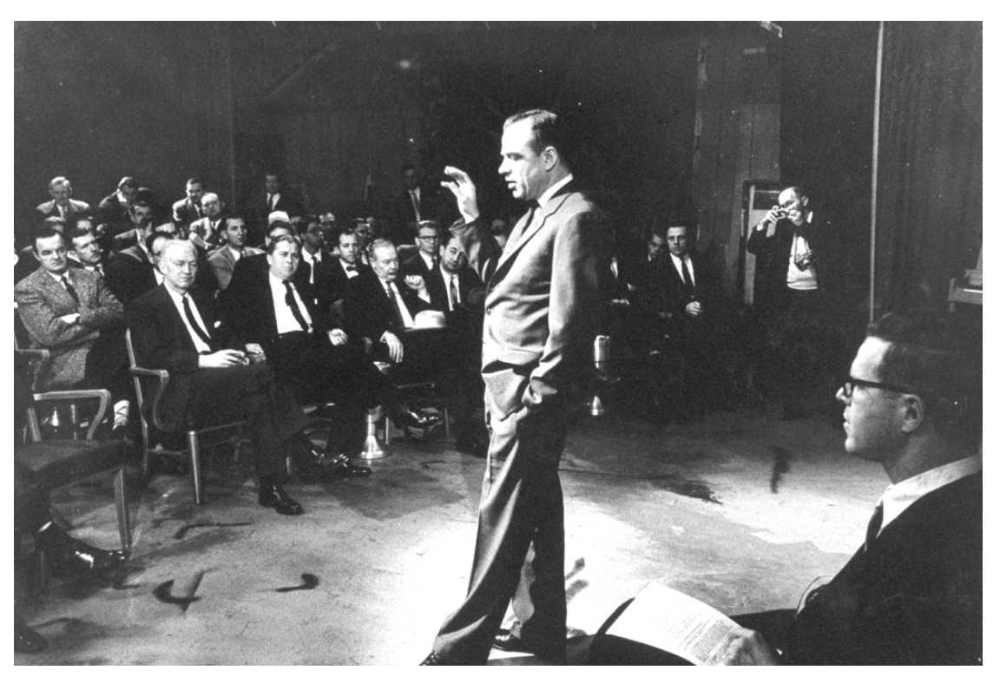

广告行为是如此费钱，如此复杂，而结果又是如此难以预计，因此广告投放者一直试图寻找到像科学定律那样的规律，能够保证取得预期结果。本书开头已经提到，它们希望存在某把金钥匙，能够解开成功销售的秘密。在物理学领域，科学家知道如果他们做A，那么结果B就会出现；如果做Y，那么结果Z就会出现。在广告行为中有可能出现同样的情况吗？一百多年前，芝加哥市的西北大学已经有了广告心理学研究。广告心理学教授沃尔特·迪尔·斯科特于1901年向广告业的玛瑙俱乐部发表演讲，主题是“关于非自觉性注意力的心理学研究在广告行为上的应用”；1909年，他又出版了一部名为《广告心理学》的专著。这是无数相关研究中的开创性作品，这些研究试图用心理学词汇来揭示广告的工作原理。
大约十四年后，美国广告业历史上最伟大的广告文案创作者克劳德·霍普金斯于1923年出版了一部名为《科学广告行为》的专著，当时他也在寻找传说中的金钥匙。对于如今的广告业从业人员来说，近百年前这种能够将广告业变成一门科学的说法无聊且可笑。不过，霍普金斯的著作已经成为一部经典，到现在依然如此。霍普金斯专门研究直接回应性的优惠券广告，这类广告的结果可以通过回收的优惠券数量来测算。利用自己几十年来得到的优惠券的回应数据，霍普金斯得出了撰写成功广告的规律，他所总结的许多规律（对于优惠券广告而言）如今依旧有效。但它们并不总是适用于为品牌产品所做的非优惠券性质的广告，而且电台、电视和其他许多现代广告媒体在1923年都还没有出现。然而，试图将广告行为变成一门科学的做法并未就此停止。但是随着20世纪30年代大萧条期间以及二战期间和战后世界范围内广告支出的下降，广告行为陷入了沉寂。
直到20世纪50年代初期，广告行为才重新开始活跃。在美国，纽约和芝加哥出现了一场新的运动，有人认为他们已经找到了金钥匙。这把金钥匙被称为动机调查 ，有时也叫深度调查 ，它大体上基于弗洛伊德学派的心理分析理论。它的观点是，消费者的购买行为往往是情绪化多于理性安排，并且受到人们的潜意识欲望的影响（事实上应该说受到其控制）。调查雇用了受过专业训练的心理学家或精神治疗医师，对消费者进行长时间的一对一访谈，通过类似于精神诊所所使用的分析方法来探测消费者的潜意识。这些一对一访谈当时被称为“深度访谈”，并一直沿用至今。有两个人都声称他们是这类研究的开创者：一个人是欧内斯特·迪希特博士（他远比后者知名），另一个是路易斯·切斯金。两个人都受过心理学训练，都有过精神分析的经历，都声称自己在20世纪30年代开始实验此类深度访谈，尽管他们的研究直到20年后才引起关注。
动机调查是万斯·帕卡德所写的《潜藏的劝说者》（1957）一书的主题，这本书至今依然是知名畅销书。在这本书中，迪希特、切斯金以及其他人就他们的调查方法的影响作了令人印象深刻的断言。例如，迪希特博士声称，成功的广告：
他还声称：“我们暴露了人们作出理性判断的心理过程。”
这些断言引起了许多人的密切关注，人们不喜欢他们的理性化过程被别人“暴露”这一说法，也不喜欢他们的动机和欲望在心理上受到他人操控这一论断。这样的言论让他们听起来就像是木偶，而广告行为则是控制他们的牵绳。这就是万斯·帕卡德书中令人惊恐的主题，正是因为这一主题该书才如此畅销。在当时，人们经常谈论“洗脑”。（经典的洗脑电影《谍网迷魂》拍摄于1962年。）但是，许多人当时所担忧的控制人们大脑的能力实际上从不存在，当然在广告业中也没有这样的力量。我们不要忘了，调查者的论断（事实上也包括广告从业人员的言论）经常是夸张的，有目的的。如果能说服广告投放者，让后者相信它们的调查以及它们所做的广告威力无穷，这显然符合它们的经济利益。以这种方式，它们可以赢得更多客户，并且客户将花费更多资金进行广告宣传。因此，必须谨慎对待它们的论断：这些言论往往经过夸大，有时完全不可信。
在广告业历史上有一起臭名昭著的“调查”事件，其性质恶劣到了极点。毫无疑问，对于这样的“调查”结果，更不能轻信。1957年，一位名叫詹姆斯·维卡里的美国市场调查者声称，他大幅度提高了新泽西州利堡地区电影院里可口可乐和爆米花的销量，他的秘诀是在电影屏幕上快速打出“喝可口可乐”和“吃爆米花”的文字，闪现的速度必须快到让观众无法有意识地注意到讯息。他将这一过程称为“潜意识广告”，“潜意识”一词的英文subliminal源自拉丁词根sub（底下的）和limen（感官接受）。维卡里的发现立即引起了公众的强烈不安。万斯·帕卡德在《潜藏的劝说者》第二版中公开了维卡里的实验。各个地方的人们都感到惊恐，自己竟然在没有察觉的情况下受到了潜意识广告的操控。在英国，电视节目主管部门几乎立即禁止了潜意识广告。但维卡里实际上从没有利用潜意识说服任何人购买可口可乐和爆米花。1962年，他承认整件事是个骗局，没有人能复制他所声称完成的实验。人们现在依旧在谈论和惧怕潜意识广告，但它从不存在。（近期研究表明，各种形式的潜意识交流能够发生，但没有证据表明，它们可以被用于广告。）
尽管如此，“潜在的说服者”和“潜意识广告”这些短语依然进入了人们的日常语言，成为普遍用法。它们的使用是如此普遍，以至于下一本引起高度争议的关于广告影响力的调查专著被命名为《潜意识诱惑》，该书出版于1975年，作者是西安大略大学的威尔逊·布莱恩·基教授。和之前的《潜在的劝说者》一样，《潜意识诱惑》利用了公众对于遭受“秘密”广告讯息操控的恐惧，从而成为畅销书，虽然它的畅销程度不如前者。
基教授认为，保证成功性行为的讯息被加密后置于了（他所用的词是“内嵌于”）广告中。
他声称，这些内嵌信息，就像潜意识广告（此时已经被否定）一样，无法被意识察觉，但是却能控制消费者的行为。基教授声称：

图14 詹姆斯·维卡里：他声称自己于1957年在新泽西完成的“潜意识广告”实验是一场骗局
这完全是胡说八道。广告代理机构中从没有过所谓的“负责内嵌信息的技术人员”，现在也没有这样的人。但是，所有的（或者说绝大多数）广告依靠对成功的性行为作出保证来达到游说效果，这样的观点再次造成巨大影响。无数的媒体文章和争论都基于这样的看法，即性总是能让广告更为活跃，并且性能够销售任何事物：性就是人们长期以来一直寻找的金钥匙。这些也全是胡说八道。广告行为中几乎不存在性的因素，尽管多数人不相信这一点。的确，存在宣传香水、化妆品、时尚用品和女性内衣的性感的广告，在这些产品宣传中加入一点点情色不会犯错。其他产品的广告宣传中也有些许性感色彩，但如果某种冰淇淋（比如哈根达斯）胆敢在英国进行广告宣传时尝试好玩但无伤大雅的性感形象，必然会造成公众的恐慌，他们将因为广告中的性元素而感到不安，并要求解释。显然，如果淫秽的广告行为随处可见，人们就不可能这么大惊小怪。如果广告中完全没有性元素，这将会令人吃惊。但是否存在为超市、家用清洁剂、药品和金融产品进行宣传的性感广告呢？几乎没有。
公众坚持认为，他们不喜欢广告宣传中掺杂不相关的性元素。英国广告标准局所收到的投诉中，有约五分之一都是抱怨一些广告品位低下，有伤风化。而且，现在有超过40%的消费者支出源自50岁以上的老年人。他们并非都对性缺少需求，但在他们心中，情欲或许并不是最重要的。出于这些原因，广告倾向于采用庄重风格，而不是情色当道。在英美两国的广告中，你从来不会看到任何一点赤裸裸的性表白，也不会出现正面全身裸体。与媒体相比，广告描绘了一个真正洁净的世界，甚至可以说过于拘谨而不是过于放肆，反而显得不那么真实。
几乎上述所有的理论都来自广告业以外的人：学者和调查人员。但世界上最知名也最具影响的广告调查过程之一出自一家广告代理机构，它帮助该机构成为了世界上最大的广告代理之一。这家代理机构的名字来自它的创始人泰德·贝茨。该公司确信，它发现了难以寻觅的金钥匙。泰德·贝茨公司创始于纽约，迅速发展成为世界性的服务网络。它所开发的广告过程总是以其公共“面目”而为人所知，即所谓的独特的销售主张（USP） 。但事实上，总结USP的过程是一个完整的广告宣传发展体系，在其中调查起到了不可或缺的作用。
USP体系从一开始就声称，所有的广告宣传活动应该搜寻并且专注于品牌的某个细节，这个细节将该品牌与它的竞争对手区分开来，并且促使人们购买。但一旦USP得到确认，并且被纳入广告宣传活动中，这一体系的调查部分就开始运作。当广告宣传开始进行时，调查活动会追踪公众对USP的了解程度（我们在下一部分将会讨论这种测算），并且有两个数字需要计算：
泰德·贝茨将（1）和（2）之间的差别称为“惯用影响力”。该代理机构声称，只要（1）大于（2），两者间的差额（3）代表了在USP的游说下选择购买该品牌的人口比重。这听起来合乎逻辑：如果更多知道USP的人购买该品牌，那么可以假定是USP说服他们选择购买的。（1）和（2）之间的差额越大，USP的游说力量也越大。如果（2）和（1）大致相等，那么USP没能做到说服额外的人购买该品牌，这意味着USP缺乏说服力。在某些罕见的案例中，（2）大于（1），也就是说，了解USP的人反而比不了解的人更少购买该品牌，这意味着USP反而起到了负作用，惯用影响力是负的。如果一次广告宣传活动没有体现足够的正面惯用影响力，那么这次宣传必然将遭到失败。
泰德·贝茨声称，通过精确辨识USP，并且测算它们的惯用影响力，可以极大地提高广告的有效性。从20世纪40年代早期到60年代晚期，贝茨公司发展并推广了这一体系，获得了极大成功。在那些年里，该公司确实为它的客户完成了极其有效的宣传活动，尤其是为玛氏公司（多年来一直是它们最大的国际性客户）所做的宣传，这反过来也让更多客户选择它们。USP同时也是贝茨公司自身的独特销售主张，它在客户中所产生的惯用影响力相当大。
但是，最近几十年来出现了三个变化，这些变化严重损害了USP体系。首先，调查显示，定期使用某品牌（任何品牌）的人比那些不使用该品牌的人更有可能了解它的广告。这被称为“反馈”。因此，惯用影响颠倒过来了。并不是了解某广告说服你使用某品牌：而是当你使用某个品牌，你更有可能了解它的广告宣传。或者更确切地说，两件事同时发生，任何一种单向的因果关系都不可能得到证明。
其次，随着经济变得更为富裕，更多的产品进入市场，不同品牌之间的功能差异时常变得难以察觉。主要差别在于品牌形象的不同，公众对于品牌有不同感受，不过有时他们清楚地知道这些品牌的产品规格完全一样。因此，侧重品牌形象的广告行为变得日渐重要，而传统上以USP为主的广告行为的重要性则减弱了。
再次，与此相关的是，USP体系依赖于文字表达。USP必须借助文字来表达，因此人们对它的记忆很容易进行评估。但品牌形象的传递或许更多是视觉性的而不是文字性的，许多商业广告或许也使用了非常有效的（没有文字的）音乐。正如迪希特博士坚持认为的那样，消费者经常因为情感因素而非理性因素选购某些产品，这些情感因素他们自己或许很难分辨，更不要说形诸文字了。
USP体系已经过时，同样过时的还有泰德·贝茨的惯用影响力。但是，基本原则是要辨识出能够将一个品牌与其他竞争对手区分开来的单一细节（在能够识别的情况下），这条基本原则依然是大多数现代广告策略的关键因素。
如今的广告调查已经吸收了许多历史经验，并且早就不再寻找一把能解决一切难题的金钥匙。如今的调查一点一点地来处理广告宣传过程的各个部分，随着宣传活动的进展，力求逐步改善其影响力和实际效果。现在广告业的从业人员中没有人相信，存在一种整体性的科学理论，能够保证所有广告宣传的实效性。每个人都意识到，广告行为实在是过于复杂且差异过大，因此这样的理论不可能存在。
如今，对广告宣传所做的调查主要分为两大类：前期测试和后期追踪。前者中的大多数由创意代理来负责执行；后者中的大多数则由广告投放者牵头，雇用它们自行选择的调查公司来执行。
我们已经看到，在代理机构的广告企划人员起草了广告策略并且得到同事和客户的同意后，宣传活动便开始展露雏形。广告策略包括广告宣传活动所必须传递的讯息和针对的目标市场。在关于代理机构和创造性的章节里，我们已经看到，在创意团队有了初始想法或概念后，广告企划人员重新参与到宣传活动的酝酿过程中。在这一阶段，他们从目标市场中选取样本，对这些概念进行测试。
测试几乎总是采取焦点小组访谈的形式，每组八到十人，不过有时也会采取一对一访谈，这种方式由动机调查人员最先采用。对于接受访谈的人员，无论是采取焦点小组或一对一访谈的方式，有一点极为重要，那就是要从目标市场中选取人员。如果访谈使用了错误的样本，所获得的结果不仅与调查无关，而且可能会产生误导。举个简单的例子：如果对轿车司机进行访谈，内容却是关于一款跑车的广告，他们很可能会关注跑车的安全性，并且希望广告中强调安全信息。相较之下，跑车司机没那么关注安全，却对车辆的性能和操控性极其感兴趣。鉴于轿车司机购买跑车的可能性很小，将他们的意见包括在内将影响到广告宣传的有效性。但令人吃惊的是，这样的错误时常出现。
在一个焦点小组中，有八到十人聚集在一起，在一个有经验的组长的引导下，他们就展示给他们看的创意概念展开讨论。组长通常是经验丰富的市场调查人员或广告企划人员。相比一对一访谈，焦点小组访谈有三点优势。焦点小组访谈成本远比一对一访谈来得低；它们更为快捷，一次性访谈八到十人总是比对他们分别进行访谈来得快；最重要的是，小组成员通过交流，作出反应，组长可以鼓励他们共同来探讨这些内容。焦点小组访谈的缺点在于，每个人没有充足时间来表达个人观点；因此，不可能深入了解个人的反应；害羞的人可能会被其他人压倒，虽然有经验的组长会设法避免这种情况。调查同样显示，即使有经验的组长往往也会影响被访谈者的回答，虽然他们努力避免这么做。（在一对一访谈中，同样会出现这种情况。）
一般情况下，总是要进行好几个焦点小组访谈，只依靠单个小组的话风险太大。负责处理这些访谈的人员将对结果做进一步处理，反复听讨论的录音带，并且仔细研究受访谈对象的反应。随即，他或她将与创意团队和客户执行人员见面，一起讨论访谈结果。如果某些结果是负面的，创意团队通常将修正广告概念，从而克服目标市场的担忧。但有时不可能只做修正，整个概念或整组概念不得不被放弃。于是，又重头回到了创意构思阶段！如上所述，并非所有的创意团队都能接受批评，有时他们会质疑调查结果，并对其产生强烈不满，但最终，他们不得不接受这一体系。
只有当某个广告概念顺利通过这一过程后，代理机构才会将它，连同调查报告一起，交给客户。20世纪90年代著名的吉尼斯啤酒冲浪者系列广告（大体上基于文学名著《白鲸》）是一个广告企划过程的优秀案例。2000年5月，这一系列广告被英国公众评为“英国有史以来的最佳广告”。广告企划人员不断地进行调查，整个广告计划曾经几度濒临危险，不过最终创意团队解决了调查所发现的问题。这花了整整一年时间，但广告播出后的效果表明，花费的努力完全值得。
追踪研究始于20世纪50年代，但直到20世纪90年代才成为宣传活动启动之后效果评估的主导形式。正如其名称所示，追踪调查在广告宣传活动启动后通过定期调查来跟踪活动的影响。调查的问题涉及多个方面：被调查者对于广告活动的记忆，或者对活动不同部分的记忆；被调查者对于宣传活动的态度：他们认为哪些内容好或者坏，哪些部分有趣或者无聊，哪些部分他们喜欢或不喜欢，哪些部分有说服力或缺少说服力，等等。
追踪调查可以每月、每两个月或每季度开展一次。频率更低的调查无法做到“追踪”广告宣传活动，但当某个宣传活动采取无规律的广告宣传时（就像那些糟糕的宣传活动时常做的那样），研究人员也可以采用低频率的调查方式。每次追踪调查所使用的问题必须和前几次保持一致，这一点非常关键，只有这样，不同的调查才具有可比性。此外，每次调查的访谈对象必须是被调查者中的匹配样本。调查问题的措辞或者被调查人员的样本结构发生任何细微变化都可能导致调查结果出现大幅度的、看起来难以解释的变动。前后一致的做法也有助于积累规范数据。多年来，调查公司和广告投放者已经知道，在任何给定的市场，对于任何给定的广告费用水平，调查可以达到什么样的平均回应水平。
一般来说，追踪数据中最为重要的是对于广告的了解度：有多少比重的公众记住了广告？其中隐含的假定是，消费者不会对他们无法记住的广告作出回应。但是，调查结果一再表明，消费者或许并没有受到他们所记住的广告的影响，并且有时消费者还会受到他们没有记住（至少不是有意识地记住）的广告的影响。因此，广告的了解度只是衡量宣传活动有效性的近似参考数据，虽然它被广泛用作一种有用的、粗略的和简单的评估手段。
“了解度”也没有像乍听起来那样简单明了。我们在关于独特销售主张的部分已经看到，“了解度”很大程度上受到“反馈”作用的影响。因此，拥有大量用户的主要品牌往往比少数人使用的小品牌自动获得了更高的了解度。此外，在自发性（或者说最初反应）了解和经过提示的了解（“你记得任何巧克力广告吗？”与“你记得玛氏巧克力的广告吗？”）之间存在巨大差异。通过文字表达的、事实性的讯息相比视觉性的或情绪性的讯息更容易被记住，或者说在调查访问过程中更容易产生关联。更高水平的了解度通常都因“公共”媒体（如电视、印刷、海报等）而不是“私人化的”、密切针对目标的媒体（如直邮、电子邮件、文字讯息等）而产生。不过，虽然那些密切针对目标的媒体所产生的了解度较低，但它们在那些以个人身份接收到讯息的受众当中却可能产生异乎寻常的销售效果。
尽管有这些限制，许多广告投放者依然根据追踪调查的结果来设置关键绩效指标。例如：“在宣传活动结束的时候，广告行为的关键绩效指标是xx%的受众了解度，必须达到这个水平！”如果宣传活动没有取得预期的关键绩效指标，它将被中止：广告投放者会感到，继续进行宣传纯属浪费金钱。因此，代理机构总是担心，针对它们发起的广告宣传活动的下一次追踪调查的结果会很糟糕。这并非毫无缘由：有许多代理机构被客户解雇，就是因为追踪调查的结果一直很糟糕。
有经验的广告投放者并不认为，追踪调查是广告宣传活动后期评估的唯一重点，但追踪调查确实是使用最为广泛的评估体系。
虽然焦点小组访谈（在宣传活动开始之前）和追踪调查（在宣传活动开始之后）已经成为广告行为评估的标准手段，调查者依然在不断发明新的方法，他们希望这些方法能够比前面两种方法更加准确，更为精细。这些新的手段总是由发明它们的调查者来大力推广；在推广初期，这些调查者的影响力很大，后来则慢慢减弱。
例如，20世纪60年代有一段短暂的时期，瞳孔放大成为一项时髦的测量手段。心理学家提出，受测试者在看到他们极其喜欢的图像时（比如，向年轻男士展示一位诱人的女性），他们的瞳孔会无意识地放大，而看到他们不喜欢的图像时（比如，纳粹集中营里的囚犯），他们的瞳孔会缩小。在他们观看这些图片时，眼睛的变化可以被拍摄下来，从而测量瞳孔变化。由此，有人得出假定，瞳孔放大是测量人们对广告反应程度的好办法。但是，不同广告所造成的差异远远小于那些更为极端的视觉形象所造成的差异；并且，在电视广告的播放过程中，瞳孔的大小总在变化，尤其是当它对浅色和深色的图像作出反应的时候。因此，瞳孔放大论没能持续流行下去。
对眼睛变化的追踪（当眼睛看事物时跟踪眼睛的运动轨迹）已经由心理学家在实验室里使用了近一个世纪。但直到最近，红外线眼睛追踪目镜才被用于商业用途，这种目镜便于携带，并且能精确显示眼睛的运动轨迹。这种方法有助于研究人们对广告（尤其是平面广告）的不同部分的关注。但这并不是针对广告说服力的测量。
其他的有用设备还包括视觉记忆测试镜，通过这种仪器，广告以越来越短的间隔进行播放，被测试者被要求回答他们所看到的内容，整个过程和视力测试差不多。汗量测定是关于参与度和兴奋度的指标。兴趣拨号测试要求被测试者在观看电视广告时转动一个拨号器来说明他们感兴趣或不感兴趣的广告部分，这种方法可以提供有用信息。近来出现一种新的方法-脑部反应成像和扫描，即在人们观看广告时，通过核磁共振成像技术将人的大脑反应扫描记录下来。人们再次希望，这种方法将揭示真正的、无意识的反应。一些研究者对利用核磁共振成像进行大脑扫描这项技术在这方面的应用前景十分看好。目前的这些方法均未能产生任何真正有用的数据，依然还有很长一段路要走。